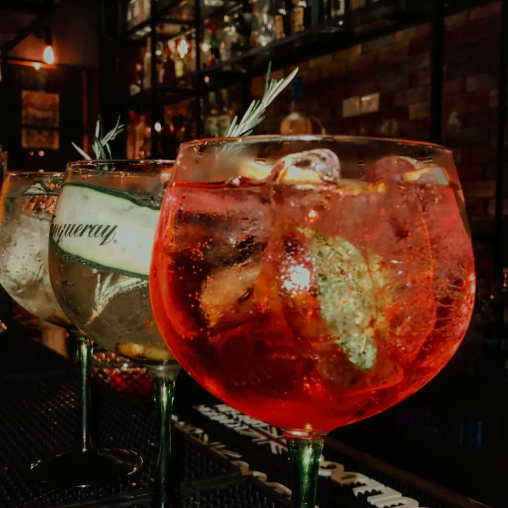

Chapter 02 — The Gin
A gin & tonic is an architecture.
Five elements decide every glass we pour.
Anatomy of a gin and tonic
-
Element
01The gin
Juniper must lead.
By definition, gin is a spirit whose main flavour is the juniper berry; every other botanical plays a supporting role. Ask for a London Dry if you want juniper loud, or a contemporary gin for softer citrus or floral notes.
-
Element
02Botanicals
The garnish repeats what is in the bottle.
Katún, a gin from Yucatán, is served with radish, cilantro and banana leaf. Hendrick's gets cucumber, roasted pineapple and rosemary.
-
Element
03Tonic
Bitterness frames the gin.
Quinine gives tonic its bitter edge, and the bubbles lift the aromas. Fever-Tree and Schweppes quina are on the list.
-
Element
04Ice
Cold, hard and plenty of it.
A full glass of large, clear ice melts slowly, so the drink stays cold without being watered down.
-
Element
05The copa
A wide bowl for ice and aroma.
The balloon glass, the Spanish copa balón, holds a lot of ice and gathers the aroma at the rim, where the nose meets the drink.

Showing all 51 gins.
México 10
- Katún — made in Yucatán
- Diega
- Diega Rosas
- Henry Oliver
- Reina Madre
- Armónico
- Fresco 77
- Condesa Clásica
- Condesa Xoconostle
- Ginebra Loro
England 23
- Beefeater
- Beefeater 24
- Beefeater Pink
- Beefeater Blackberry
- Tanqueray London Dry
- Tanqueray Ten
- Bombay
- Bulldog
- The London No. 1
- MOM
- Martin Miller's
- Ish Limed
- Ish London Dry
- Brockmans
- Fifty Pounds
- Bloom
- Opihr
- Barber's Gin
- Langley's
- Haswell
- Thomas Dakin
- Boodles
- Boodles Mulberry
Spain 6
- Larios
- Puerto de Indias
- Rives Special
- Wint & Lila
- Botanic Premium
- Gin Mare
Scotland 3
- Hendrick's
- The Gin Factory
- The Botanist
Germany 2
- Monkey 47
- Monkey 47 Sloe
France 2
- Citadelle
- Citadelle Réserve
Holland 2
- Bols Zeer Oude
- Bols Amsterdam
Italy 1
- Malfy
USA 1
- Prairie Organic
Argentina 1
- Príncipe de los Apóstoles